Gucci will become the title sponsor of the Alpine Formula 1 team starting in 2027, racing as Gucci Racing Alpine Formula One Team — the first luxury fashion house ever to title-sponsor an F1 team. The deal launches "Gucci Racing," a new platform Gucci describes as being "at the intersection of luxury and sport." It's the latest and biggest move in a turnaround that's been twelve months in the making, and it's the cleanest signal yet of where the new leadership is taking the brand: spectacle, scale, and a deliberate pivot away from the quiet aesthetic that defined the previous creative director's two-year tenure.
The financial commitment is substantial. The three-year contract is estimated at $50–60 million per season, with bonus incentives pushing the total above $150 million. That puts it in the same range as HP's title sponsorship of Ferrari ($50–100M/year, depending on the year), and it's the largest single brand-marketing commitment Gucci has made in its modern history.
Why F1 — and what Gucci actually gets for $150 million
A title sponsorship of this scale isn't just a logo placement. It's a bundle of marketing assets that don't exist outside of professional sport:
The team name itself becomes the brand — every broadcast, headline, and race-result chyron displays "Gucci Racing Alpine F1 Team" for three full seasons.
Use of team imagery, car liveries, and race footage in Gucci's own campaigns, retail, and social content. The 2027 car becomes a Gucci marketing asset, not just a sponsorship credit.
Pierre Gasly and Franco Colapinto become available to Gucci for campaigns, events, ambassador work, and content. Two professional athletes with global followings, contractually accessible.
VIP access to every race weekend — the most exclusive corporate hospitality environment in global sport. Gucci can host clients, press, and ambassadors at 24 Grand Prix events per year.
Bespoke team apparel, fashion product, and exclusive experiential merchandise tied to Gucci Racing — an entirely new retail category created by the deal.
1.83 billion cumulative TV viewers across the 2025 F1 season. 76 million average per Grand Prix. No traditional fashion-marketing channel buys that audience.
A title sponsorship is the top of the F1 sponsorship pyramid. Most F1 teams subsidize their roughly $250 million annual budgets by selling smaller logo placements on different parts of the car — the rear wing, the sidepods, the halo, the engine cover — at vastly different price points. See the diagram at the bottom of this page for an approximate price-by-location breakdown of where the sponsorships go and what they cost.
BWT stands for Best Water Technology, an Austrian company specializing in water filters, softeners, and purification systems. They've been Alpine's title sponsor since 2022, which is why the team's recent cars have raced in BWT's signature pink and blue livery. BWT's F1 program was tied to a global sustainability message about reducing single-use plastics. The Gucci deal ends that run — Alpine will race in Gucci's black and gold from 2027 forward, with BWT remaining only as a smaller partner.
A 105-year-old brand mid-reinvention.
Gucci was founded in Florence in 1921 and spent the next century as one of luxury's most consistent powerhouses. The thing to understand about Gucci today, though, is that the brand has lived three completely different lives in the last decade — and the version operating now is on its third creative reset since 2022.
The peak Gucci most people picture is the Alessandro Michele era (2015–2022). Michele's maximalist, eclectic, gender-fluid aesthetic doubled Gucci's revenue and turned it into the favorite brand of millennials and early-Gen Z. It was loud, magpie, romantic, and instantly recognizable. The double-G logo went everywhere. Then it stopped working — partly because the aesthetic became overexposed, partly because the broader luxury market shifted toward what's now called "quiet luxury."
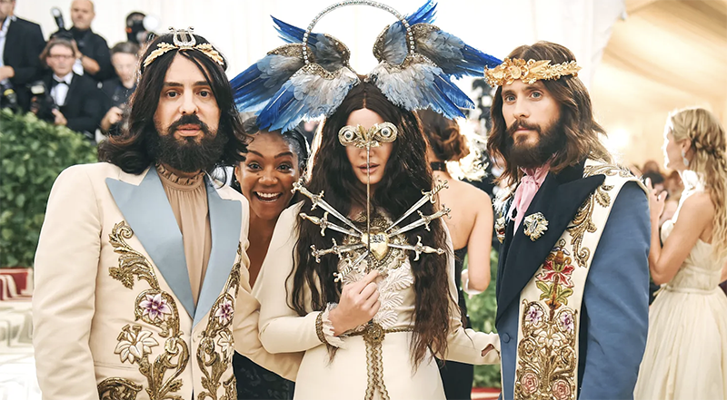
Gucci's response was Sabato De Sarno (2023–2025): a deliberate retreat into restrained classicism. Quieter palettes, less ornamentation, less logo. It was the right diagnosis of where luxury was heading. It was not, however, the right product for Gucci's existing customer base, who had been trained for a decade to expect spectacle. The strategy didn't ignite sales. De Sarno was out by February 2025.
The current chapter is Demna Gvasalia (July 2025–), the Georgian designer best known for his decade at Balenciaga. Demna is, by reputation, a provocateur — his Balenciaga work was dystopian, often deliberately uncomfortable, and culturally loud. Kering's stock dropped 10% the day his appointment was announced because investors worried the brand was about to swing to an aesthetic Gucci's customers couldn't follow. Demna's first Gucci show landed in February 2026 with a softer, more emotional register than his Balenciaga work — restraint inside provocation rather than provocation for its own sake.
That trajectory — Michele's loud romanticism, De Sarno's quiet classicism, Demna's calibrated spectacle — is the entire reason the IMC story below is so interesting. The same brand has run three IMC playbooks in eight years, and each one was a response to the limits of the one before.
Three IMC eras in eight years.
The Gucci IMC story is a textbook case of how a luxury brand's channel mix has to evolve with its creative direction. The same house has cycled through three distinct channel strategies since 2015, and each cycle teaches a different lesson about luxury marketing under pressure.
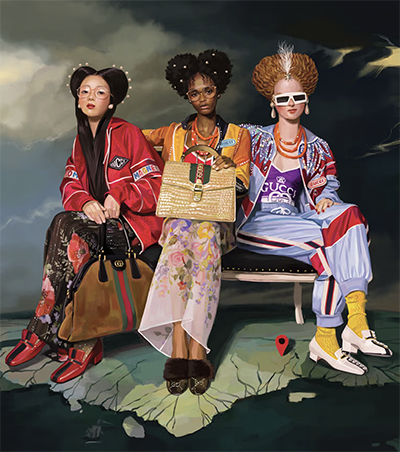
Heavy paid social, especially Instagram. Celebrity ambassadors at scale (Harry Styles, Jared Leto). Cinematic campaign films with star directors. The double-G monogram everywhere. IMC strategy was about cultural ubiquity — be in every feed, on every red carpet, in every meme.
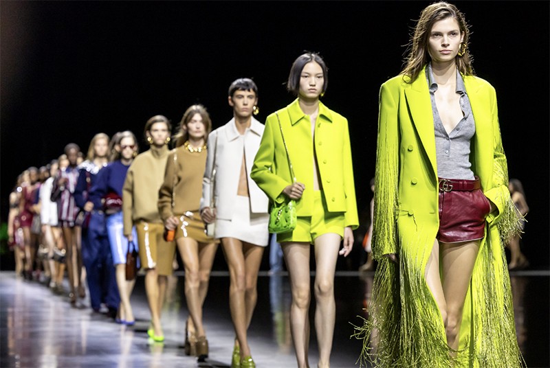
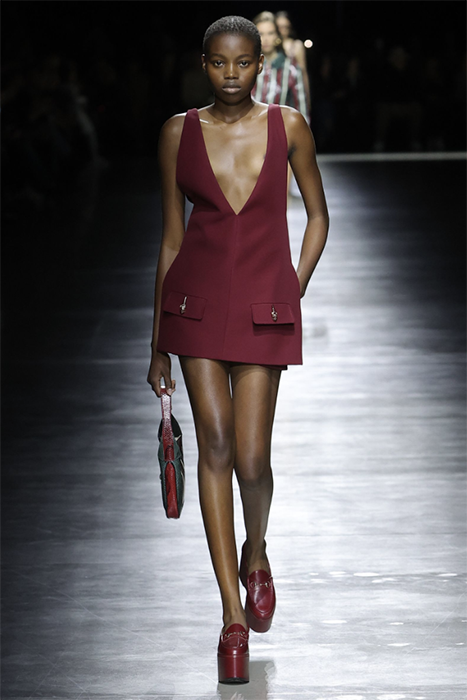
Quieter campaign aesthetics. Less celebrity, more product. Pivot toward Hermès-style elegance. The IMC pulled back to match the quieter design language — but the brand had spent a decade training the market to expect spectacle, and the audience didn't follow.
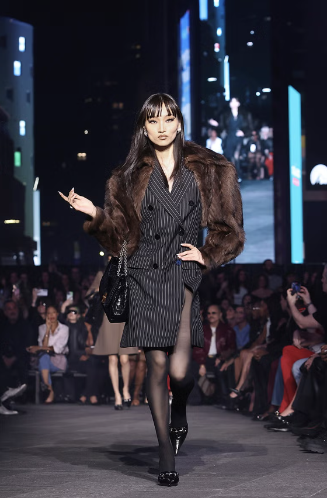
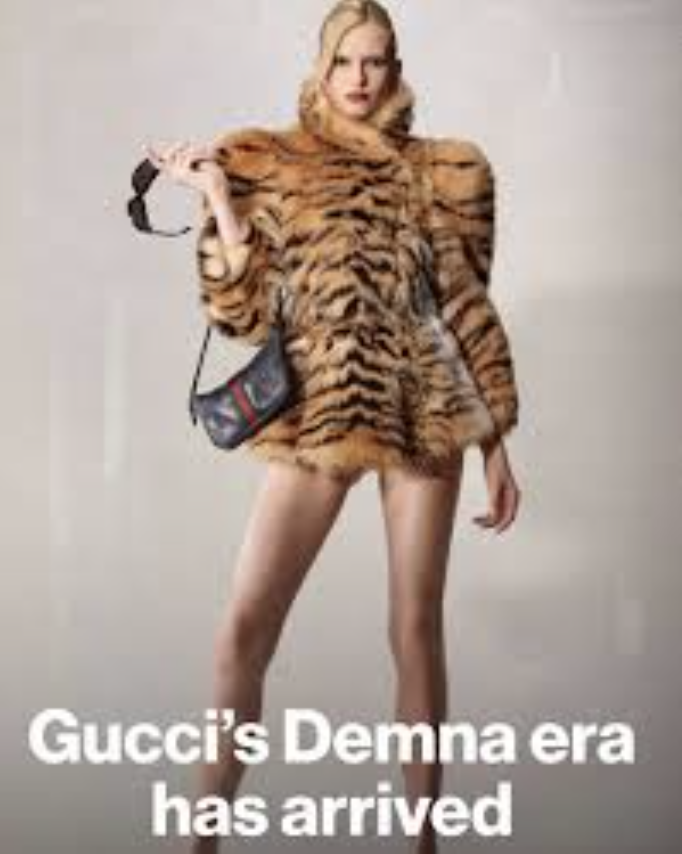
Times Square runway with Tom Brady and Cindy Crawford. The "Generation Gucci" 84-image campaign. Title sponsorship of an F1 team starting 2027. IMC is back to scale and noise — but more architectural and less random than the Michele era's everything-everywhere energy.
Look closely at what the current chapter is doing, and the IMC is unusually integrated for luxury. Traditional channels (campaign films, magazine editorial, OOH) are running alongside cultural-moment plays (Times Square as both a runway and a media event) and a long-horizon platform bet (Gucci Racing as a sub-brand built to live across cars, apparel, retail, and content for years). Each piece reinforces the others. The Brady-and-Crawford Times Square moment was both a celebrity activation and a paid media buy and an earned-media generator. The F1 deal is simultaneously a sponsorship line item, a long-form content platform, a merchandise category, and a global awareness vehicle.
The departure from the Michele era is the discipline. Michele's Gucci was profligate — every campaign tried to be a cultural event. The Demna-era machine is more selective: fewer activations, but each one engineered to do five jobs at once.
PESO: paid and owned heavy, earned designed in.
A quick clarification about what PESO control actually means
Before unpacking Gucci's mix, it's worth pinning down what each PESO channel actually offers in terms of control — because the differences are sharper than the four-letter acronym suggests, and they explain why Gucci's recent activation strategy looks the way it does.
- Paid — you control everything: the message, the targeting, the placement, the timing. The catch is that paid only reaches people you can identify and pay to put it in front of.
- Owned — full control of the message, but only for people who already chose to visit your site or follow your social. By the time someone sees owned content, they've already moved through awareness and into consideration. The audience is small, but warm.
- Earned — the press, critics, third parties, and other content creators saying things about you. You don't control whether they cover you, what they say, or whether your brand sits alone in a story or shares a paragraph with three competitors. But it's the most credible PESO channel by far, because the audience knows you didn't pay for it.
- Shared — what your audience does with your content on their own social feeds. Adjacent to earned, but driven by individuals rather than journalists.
Here's the important piece most PESO explanations skip: earned media usually requires a paid investment as its precursor. No one writes about a brand because the brand wants them to. Press covers events, sponsorships, scandals, milestones, and cultural moments. So if you want earned coverage, you almost always have to pay for the precursor — a runway show, a sponsorship, a celebrity activation, a flagship opening — and then hope the press shows up and writes something useful.
That's the lever Gucci is pulling. They pay for the occasion. They don't — and can't — pay for the coverage. The Harper's Bazaar headline that called the Times Square show "one big giant Gucci ad" wasn't bought. It was earned by paying for a venue and a production that gave press something they wanted to cover anyway.
How Gucci's PESO mix actually breaks down
Gucci's PESO mix has always tilted toward paid and owned — that's the default position for any heritage luxury brand with the budget to control its own narrative. What's changing under the new leadership is how aggressively the earned and shared dimensions are being engineered rather than left to chance.
Paid is still the foundation: campaign films, magazine placements, OOH in fashion-capital cities, paid digital across Instagram and TikTok. Owned is the second pillar — Gucci.com as a flagship experience, the boutique network functioning as architecture-grade brand films you can walk into, and now Gucci Racing positioned to become its own owned platform. Shared sits at the celebrity-and-cultural-moment layer: the brand is built around its ambassadors' social reach and the fan communities that surround them. Earned is where the current strategy is most visibly different from the Michele era. Each major activation now seems to be selected for its earned-media yield, not just its on-channel performance.
The single-activation, multi-function logic
The cleanest way to understand the current approach is to look at what each major activation is actually doing — and how many jobs it does at once. The Michele era spent at high volume and got earned coverage as a byproduct. The Demna era is engineering activations where the earned coverage is the point, the paid investment is the trigger, and a half-dozen other strategic objectives get knocked down along the way.
GucciCore at Times Square — May 16, 2026
Gucci's Cruise 2027 show, branded "GucciCore," took over a full block of Times Square between Broadway and Seventh Avenue. Cindy Crawford closed the show. Tom Brady walked the runway in all-black leather and made his catwalk debut. Lewis Hamilton was there. So were Mariah Carey, Kim Kardashian, Paris Hilton, Anna Wintour, Emily Ratajkowski, Lindsay Lohan, Shawn Mendes, Alix Earle, and Kate Moss. The show was simulcast on the surrounding Times Square LED billboards — and Gucci even commandeered those billboards to display fake ads for fictional Gucci products (including, reportedly, Gucci supplements) as part of the show's "Guccified New York archetypes" concept.
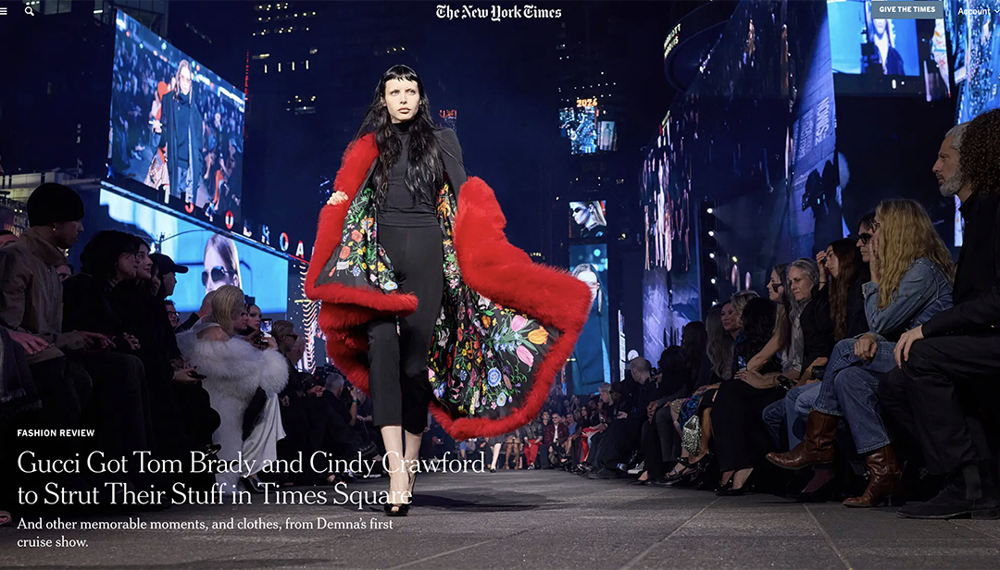
The strategic logic of choosing that venue was sharper than it first appeared. Times Square is the most saturated advertising surface in the United States. By placing the show there, Demna turned the architecture of commercial messaging itself into part of the production — and the press noticed.
That framing — the show as an ad, the venue as the medium — captured what most other coverage missed. The runway was the obvious part. The bigger move was using fifty synced billboards to broadcast a fictional Gucci universe (Gucci Acqua, Gucci Pets, the "Palazzo Gucci Hotel," even Gucci longevity supplements) before the live show began. Demna was inviting Times Square to do what Times Square already does, just with Gucci's name on every surface.
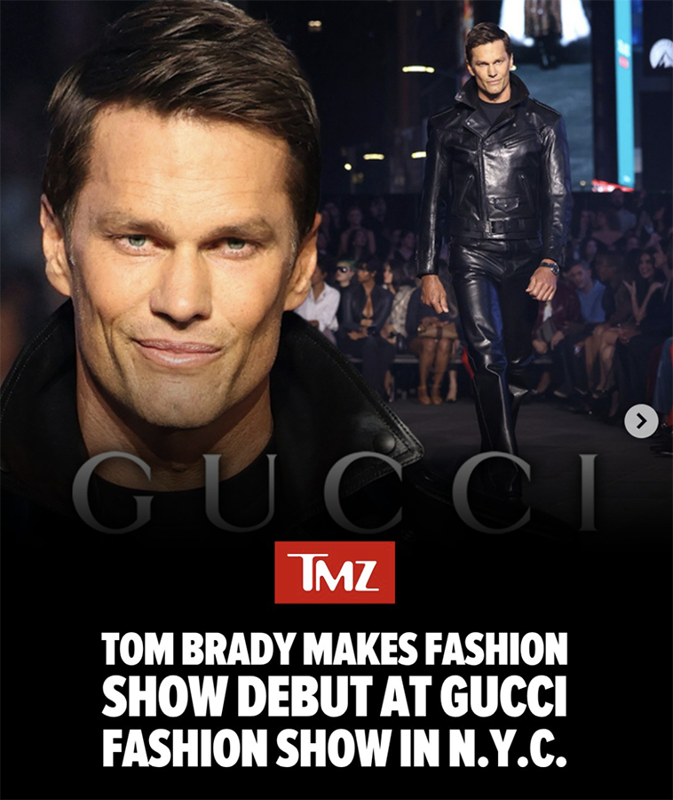
Count what that single Saturday night actually was, and the PESO logic becomes obvious. It was paid media — the cost of a Times Square takeover is in the high seven figures even before you add the production, the talent, and the casting. It was a celebrity activation — five or six A-list ambassadors on the runway, twenty more in the audience, each generating their own social posts to a combined following in the hundreds of millions. It was owned media — the show was hosted on Gucci's terms, designed to flow into Gucci.com and the boutique network. It was shared media at scale — Brady's runway walk alone was reposted by Vogue, the NFL's official account, ESPN, and TMZ within twenty-four hours. It was a product launch — Demna's first Cruise collection for the house, positioned by him as Gucci's "new core wardrobe" and engineered as the foundation for next season's retail line. And it was earned media on a scale Gucci could not have purchased directly — coverage in Reuters, AFP, the BBC, Vogue, Dazed, the AP, every major fashion and culture outlet plus most general-news outlets.
Gucci Racing Alpine F1 — announced May 27, 2026, live 2027
The F1 deal does the same multi-function work, but on a multi-year time horizon. Pull it apart:
It is, first, a paid sponsorship — a title-partner contract that gives Gucci's name prominent placement on the car, the team kit, the team transporters, and the team's official identity itself (the team will race as Gucci Racing Alpine Formula One Team). The financial terms weren't disclosed, but title sponsorships in F1 typically run in the tens of millions of dollars per year.
It is, second, a long-form content platform. F1 isn't a one-night event. It's twenty-four race weekends per year, each one producing forty-plus hours of broadcast content, behind-the-scenes documentary footage, social cuts, highlights, post-race interviews, and pre-race anticipation programming. Netflix's Drive to Survive alone has reshaped how F1 is consumed by audiences who don't watch live sports. Gucci has essentially bought a permanent year-round content slot inside one of the world's largest content ecosystems.
It is, third, a merchandise category. "Gucci Racing" was announced as a new business platform, not just a sponsorship credit — a sub-brand that will live across apparel, accessories, possibly automotive collaborations, and experiential retail for years to come. The Alpine deal is the platform's flagship, not its totality.
And it is, fourth, a global awareness vehicle on a scale no other luxury marketing channel can match. F1's 2025 season drew a cumulative global TV audience of 1.83 billion viewers — its largest in five years — with an average of 76.1 million viewers per Grand Prix. Almost 600 different brands had visible exposure during F1 broadcasts in 2025, but only one of them will be in the team name from 2027 onward.
Compare those two activations against the Michele-era practice of running dozens of smaller paid placements per quarter. The new approach makes fewer bets, but each one is structured to do five or six different jobs at once across paid, earned, shared, and owned channels. The Michele-era PESO mix was paid-heavy and earned-by-accident. The Demna-era mix is paid-heavy and earned-by-design — the activations are still expensive, but each one is built to generate proportionally more earned and shared output than a conventional campaign would, and to keep generating it across years rather than weeks.
That's the real shift, and it's the one most easily overlooked. It's not that Gucci is suddenly spending more or spending less — luxury houses at this scale have always spent at the top of the category. It's that the spend is being concentrated into fewer, larger, longer-lived activations, each one engineered to compound across multiple PESO channels rather than burning out in a single press cycle. The Times Square show ran for one night and produced two weeks of global coverage. The F1 deal runs for years and will produce coverage continuously across its lifetime.
Fewer events, more control over the message
There's a second consequence of the new approach worth naming. By running fewer activations, Gucci isn't just being more efficient — it's giving itself a better shot at controlling what the conversation is about. When you run dozens of small activations per quarter, you can't predict which one the press will pick up or how they'll frame it. The story writes itself, often in directions you didn't want. When you run two or three giant ones per year, each one is so large that the press almost has to cover it, and they're more likely to cover it on the terms the activation itself set up.
Demna's Times Square show was clearly the brand's story to tell for the two weeks that followed. The Alpine F1 announcement was a one-day breaking-news cycle that Gucci framed in its own language: "Gucci Racing — a new business and experiential platform at the intersection of luxury and sport." That phrase — not anything a journalist wrote — appeared in nearly every piece of coverage in the next 48 hours. You can't control the press. But if you give them an activation that's already pre-loaded with the framing you want, the framing tends to ride along.
The 60/40 guideline and where Gucci actually sits.
The conventional brand-marketing wisdom — sometimes called the Binet & Field 60/40 rule — says that long-term brand-building should get roughly 60% of your marketing investment and short-term performance/activation should get 40%. The ratio flexes by category. For premium luxury, brand should usually run higher than the 60% baseline because the entire economic moat is the brand itself.
My read of where Gucci sits today, listed brand-first:
The F1 title sponsorship, Times Square runway, "Generation Gucci" 84-look campaign, Demna's seasonal show productions, OOH in Milan/Paris/Tokyo/New York, and the celebrity ambassador program all sit on the brand side of the ledger. The performance work is real (paid search, paid social, DTC retargeting, the e-commerce funnel on gucci.com) but it exists to convert demand the brand work generates — not to manufacture demand on its own.
Two things to know about that 75/25 estimate. First, it's an inference, not a public number — Kering doesn't break out marketing spend with that granularity. Second, the ratio has almost certainly shifted in the last twelve months. Under De Sarno, the performance number was likely higher because the brand was leaning on its existing customer database (Gucci's 340-million-profile CRM is one of luxury's largest) to mitigate slowing acquisition. Under Demna, the brand-side investments are visibly heavier — F1 alone is the kind of multi-year commitment that pushes the ratio further toward brand.
Where it's going
The trajectory is clear: more brand, less performance, longer time horizons. F1 is a 2027-and-beyond bet. Times Square is a 2026 statement. The "Generation Gucci" campaign is built around iteration over seasons rather than a single launch moment. Gucci is consciously moving back toward the kind of long-form brand-building that the Michele era did at high volume — but with the activations chosen for cultural durability instead of cultural ubiquity.
- Gucci is operating closer to 75/25 brand-to-performance, heavier than the 60/40 textbook baseline.
- That ratio is correct for the category — but it's a bet that costs money before it earns it.
- The new leadership is increasing the brand side further. F1 alone represents years of commitment.
- If the Demna creative direction lands with consumers the way the Times Square activation landed with media, the math works. If it doesn't, this is a very expensive brand-side stretch with no quick lever to pull on the performance side.
Who actually buys Gucci — and why the answer surprises people.
Ask a room of undergraduates who Gucci is for, and most will say themselves. They'll point to the Instagram presence, the celebrity ambassadors, the TikTok visibility, the streetwear collaborations, the Demna provocations. They are not wrong about who Gucci markets to. They are wrong about who actually buys at full price.
The cleanest way to understand Gucci's segmentation is to separate the brand's three customer layers — because the loudest one in cultural conversation is the smallest one in the revenue mix.
People who can repeatedly buy handbags, shoes, ready-to-wear, jewelry, and accessories without organizing their identity around any single purchase. This is the revenue engine. Gucci's 2024 revenue of €7.7 billion was 91% directly operated retail — meaning the business depends overwhelmingly on full-price boutique and e-commerce sales, not youth hype.
The fashion/image customer at the sweet spot — old enough to have income, young enough to care about visible status and cultural relevance. During the Michele boom in 2017, 55% of Gucci sales came from consumers under 35, an unusually young distribution for a heritage luxury house. This is the layer Gucci is best at activating, and the one most receptive to cultural moments like the Times Square show.
The group Gucci's marketing feels made for — and the group that contributes the smallest revenue share. Gen Z buys entry items: fragrance, belts, wallets, sunglasses, slides, small leather goods, secondhand purchases, or one "big" symbolic item. The premium handbag and ready-to-wear sales that drive Gucci's economics come from older, richer, repeat customers.
Gen Z accounted for roughly 4% of global luxury spending pre-pandemic, and Bain reports their share has cooled in Western markets and Japan since 2024. They matter strategically, but they are not the revenue base.
Why Gen Z is in the marketing if they're not in the revenue
Gucci is using Gen Z as an aspirational recruitment audience, not a current revenue target. The economic logic is straightforward: sell the 22-year-old the belt, sunglasses, fragrance, wallet, small leather good, sneaker, or charm now. Then, if the brand stays emotionally loaded in that customer's mind for the next decade, maybe they buy the handbag, watch, ready-to-wear, or higher-margin leather good when they're 32 or 42 or 52 and finally have full luxury spending power.
Kering's own 2022 Gucci strategy presentation said the brand should "capitalize on younger generations with aspirational categories" while also pursuing "growth opportunities among mature clients through brand elevation." Translation: keep the Gen Z heat, sell them the affordable stuff, but build the business on the people who can already write five-figure checks. It's a long-arc recruitment funnel disguised as a youth-marketing program.
How Gucci's audience differs from its competitors
Hermès and Chanel skew older and wealthier still — the consumer who's done with signaling and just wants the object. Bottega Veneta plays the same territory as Hermès but with a generation younger. The pattern across luxury is consistent: as consumers age, they move from logo-forward identity brands (Gucci, LV) toward quieter status brands (Bottega, Hermès, Chanel). Gucci's strategic challenge is whether to fight that aging-up — by staying culturally loud for the next cohort — or to follow it, by elevating into the quieter-luxury zone the De Sarno era briefly attempted.
Not all premium fashion plays the same game.
Three useful contrasts — each one operating a meaningfully different IMC playbook than Gucci. The lesson isn't which approach is "right." It's that "premium fashion" isn't a single strategy. Brands in the same category can be running near-opposite marketing models and both be winning, or both struggling, depending on what they're trying to be.
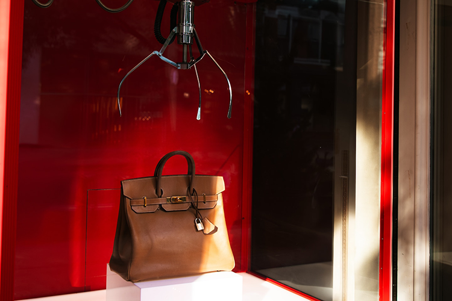
Hermès is the cleanest possible contrast to current Gucci. No F1 sponsorship. No Times Square stunt. No celebrity-led campaigns. The brand barely advertises. Marketing spend as a percent of revenue is among the lowest in the category — Hermès is so close to "no marketing department" that industry analysts use it as a case study in restraint.
The strategy works because scarcity does the marketing for free. A Birkin has a waiting list measured in years. Production is capped intentionally. Boutique experience does the persuading. The brand cleared roughly $12 billion in 2023 revenue and has been growing through the same luxury slowdown that cut Gucci's sales by 22%. The lesson isn't that Hermès is "doing it right" — it's that they've built an economic engine where loud marketing would actively damage the equity.
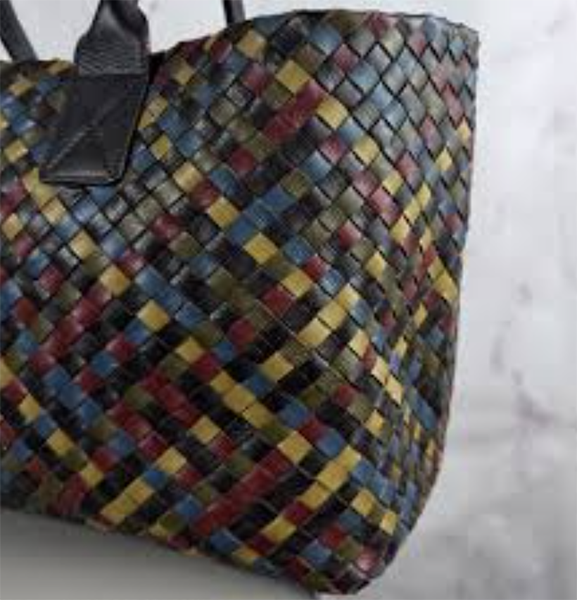
The interesting Bottega Veneta comparison is that it has the same parent company as Gucci. Same access to Kering capital. Same supply chain. Same retail infrastructure. And it has been the bright spot in Kering's portfolio while Gucci collapsed — sales up 15% in a recent quarter, with the brand functioning as the proof case that luxury can still grow.
Bottega's IMC playbook is almost the inverse of Gucci's. No visible logos. Largely absent from traditional social media for years. Marketing focused on craftsmanship and the Intrecciato weave as the recognition mark, not on branded monograms. The 1972 tagline — "When your own initials are enough" — articulated the strategy fifty years before "quiet luxury" became a category. Same corporate parent, opposite IMC. Both can work. They just can't be the same brand.
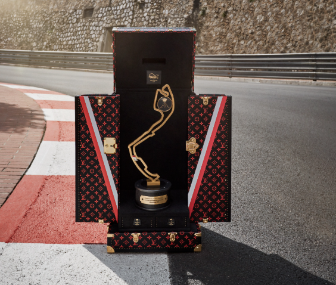
Louis Vuitton is the closest peer to Gucci on scale and strategy. Both are heritage Italian/French maisons running celebrity-led campaigns, monogram-forward visual identities, blockbuster runway productions, and global ad spend in the hundreds of millions. The Gucci F1 announcement is partly a response to LVMH's 10-year F1 partnership signed in 2024 — Gucci was watching LV plant a flag in luxury sport and decided it couldn't let that go uncontested.
The difference between the two is execution maturity. LV has been running the integrated spectacle playbook for fifteen years without a major creative reset. Gucci is rebuilding the same kind of machine on its third creative director in three years. LV is the version of the strategy that's been compounded; Gucci is the version that's being reassembled. Whether Gucci can close the gap depends almost entirely on whether the Demna era holds together long enough to compound.
The category isn't the strategy. The strategy is the strategy.
Three brands, three IMC playbooks, three different ratios. Hermès wins by refusing to play. Bottega wins by refusing to shout. LV wins by playing loud at compounding scale. Gucci is currently betting that it can run LV's playbook with sharper creative discipline than Michele had and more cultural relevance than De Sarno achieved. Five years from now we'll know whether that bet paid off. The F1 deal announced today is the clearest move yet that the bet is real and the chips are committed.
The retail shift behind the brand shift.
Most of this page has been about what Gucci says. This section is about how Gucci sells — and it turns out the marketing pivot under Demna is happening alongside a quieter but equally consequential pivot in the underlying business model. Both shifts are pointed in the same direction, and they reinforce each other.
What "DTC vs. wholesale" actually means
Luxury brands sell their product two ways. Directly operated retail — what the industry calls DTC, for direct-to-consumer — means the brand owns the store: Gucci.com, Gucci flagship boutiques, Gucci airport stores. The brand controls pricing, presentation, customer experience, and data. Margins are higher because no third party is taking a cut.
Wholesale means selling through department stores and multi-brand retailers: a Gucci section at Nordstrom or Saks, or Gucci goods on third-party luxury e-commerce sites. Wholesale gives a brand reach into places it doesn't operate, but at the cost of margin (the retailer takes a cut), control (the brand doesn't decide how its product is displayed next to competitors'), and pricing discipline (department stores discount during promotions).
For decades, the entire luxury industry has been moving from wholesale toward DTC. The reason is simple: the higher the brand's prestige, the more the wholesale environment cheapens it. Seeing a Gucci handbag next to a Michael Kors handbag in a department store undermines the very premium positioning the brand spends hundreds of millions to build elsewhere.
Where Gucci sits today
Gucci's 2024 revenue was 91% directly operated retail, with the remaining ~9% from wholesale. Kering has publicly stated the goal is to get wholesale to below 10% of total Gucci sales — the implication being that the current 9% is the floor, and they want it tighter still. The Demna-era brand strategy makes sense only if the retail strategy is also moving this direction. You can't claim to be the most culturally relevant luxury house in the world if you're also visible at the Macy's anniversary sale.
| Brand | Approx. DTC share | Direction | Why |
|---|---|---|---|
| Gucci | ~91% DTC | Pushing toward 95%+ | Aggressive wholesale reduction to match the brand-elevation strategy. |
| Louis Vuitton | ~100% DTC | Already there | LV famously refuses to sell wholesale at all. Every LV bag in the world comes from an LV store or LV.com. |
| Hermès | ~100% DTC | Already there | Pure DTC, plus scarcity, plus a hand-selected client list. The opposite of a wholesale business model. |
| Bottega Veneta | ~85–90% DTC | Pushing toward 95%+ | Same parent (Kering), same strategy as Gucci. Bottega has been faster about it. |
The pattern is clear. At the top of luxury, DTC is the standard, and any wholesale presence is a vestige to be reduced. Gucci is converging on the same model the other top houses have already adopted. The Demna-era marketing strategy is, in part, the visible signal of a less-visible retail strategy: get the brand to a place where every Gucci touchpoint is controlled, premium, and consistent — because that's the only environment in which a $50–60M-per-year F1 sponsorship pays back.
The DTC shift, the cultural spectacle, the F1 deal, the celebrity-led activations, the Demna provocations — they're all the same strategy expressed through different functions of the business. Gucci is trying to operate as a fully controlled luxury house at every customer touchpoint, from the runway to the retail rack. Whether that strategy works is a question for 2028 and beyond. Whether it's coherent is no longer a question at all.
What this page has been arguing.
Gucci is twelve months into a turnaround that, on paper, looks like nothing more than a new creative director and a couple of big sponsorship deals. Read closely, it's a coordinated reset across four functions of the business at once.
- Creative direction has moved from De Sarno's quiet classicism to Demna's calibrated spectacle — loud enough to generate cultural conversation, disciplined enough to control what the conversation is about.
- IMC has consolidated from many small activations into a few large multi-function ones — the Times Square show and the F1 deal each doing five or six PESO jobs simultaneously.
- Spend has shifted further toward brand-building (now estimated at 75/25 brand-to-performance), with the F1 commitment alone running $150M+ over three years.
- Distribution is pushing the wholesale channel toward extinction, getting Gucci to the all-DTC model that LV, Hermès, and Bottega already run.
The bet is that all four shifts compound. If Demna delivers the cultural relevance, if the F1 platform builds the new audience, if the DTC consolidation protects the premium positioning, and if the spend trajectory holds, Gucci returns to growth and the 2025 sales drop becomes a footnote. If any one of those legs fails — if Demna's aesthetic doesn't land, or the luxury slowdown deepens, or the F1 audience doesn't convert — then this is a very expensive year of repositioning with no easy off-ramp.
The F1 announcement is the most visible commitment Kering has made to the new strategy. It locks in three years of premium-sport positioning, three years of co-branded content, and three years of headlines that say "Gucci Racing" before they say anything else. It's also a forward-looking bet on a different kind of luxury audience — one that watches Grand Prix on Sunday and wants the team apparel on Monday.
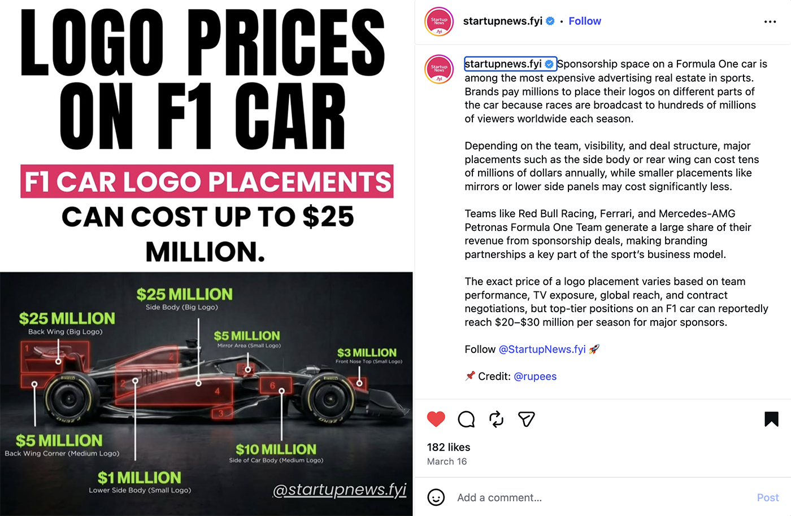